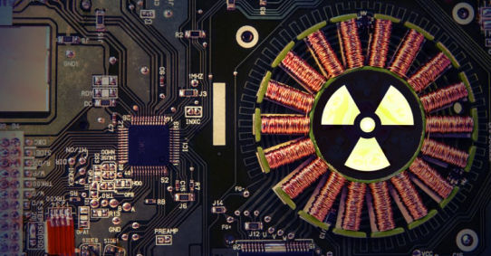
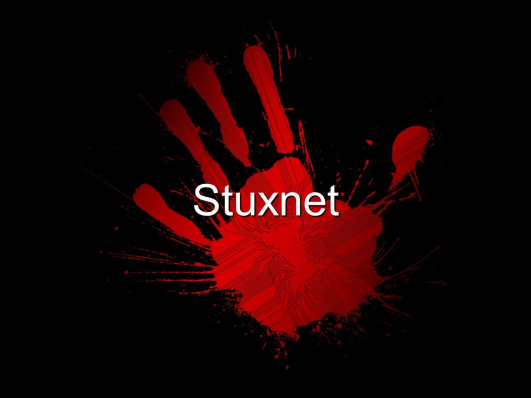
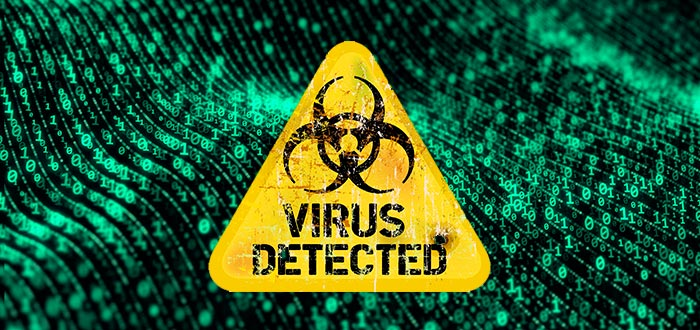

Вирус Stuxnet - это уникальный компьютерный вирус, разработанный для киберсаботажа в промышленных системах, в частности, для атак на объекты ядерного производства.
Stuxnet был обнаружен в 2010 году аналитиками компании Kaspersky Lab, привлекая внимание киберспециалистов и общественности своей сложностью и целевой направленностью. Вирус оказался одним из первых, нацеленных на промышленные системы управления.
Stuxnet представляет собой продвинутую программу злонамеренного ПО, созданную для внедрения в системы управления промышленными процессами. Этот вирус был разработан с целью заразить системы, управляющие оборудованием ядерных установок и другими промышленными объектами.
Основное действие Stuxnet заключается в манипуляциях с контроллерами промышленного оборудования. Вирус способен изменять параметры работы устройств, что может привести к серьезным техническим сбоям и нарушениям производственных процессов. Stuxnet был настроен на проникновение и скрытое функционирование в системах управления, без необходимости обнаружения.
Stuxnet существует в нескольких версиях, и хотя первые случаи обнаружения пришли в 2010 году, вирус до сих пор представляет угрозу для промышленных объектов и критической инфраструктуры. Актуальность Stuxnet подчеркивает важность защиты систем от подобного рода кибератак.

Для предотвращения атак Stuxnet и аналогичных вирусов, рекомендуется:
- Регулярно обновлять операционные системы и программное обеспечение.
- Использовать современное антивирусное программное обеспечение и средства защиты.
- Проводить обучение сотрудников по вопросам кибербезопасности.
- Ограничивать доступ к критическим системам и сегментировать сети.
При обнаружении Stuxnet или аналогичных угроз рекомендуется:
- Провести изоляцию компрометированных систем от сети.
- Использовать антивирусное программное обеспечение и специализированные инструменты для удаления вируса.
- Мониторить сетевую активность и анализировать логи для обнаружения
подозрительного поведения и атак.
- Провести аудит компьютерных систем и усилить меры безопасности в соответствии с рекомендациями экспертов по кибербезопасности.
Вирус Stuxnet остается одной из самых серьезных киберугроз, способен нарушить продуктивность и даже безопасность промышленных объектов. Понимание его механизмов действия и методов борьбы с ним является ключевым для обеспечения безопасности критической инфраструктуры и промышленных процессов.